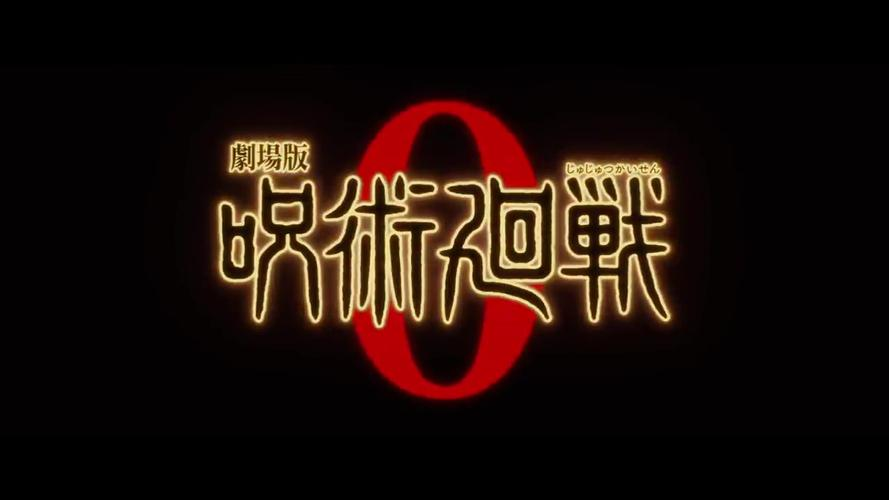

首页
角色介绍
精彩图集
登陆
注册
人-物-介-绍
虎杖悠仁
（いたどり ゆうじ）
配音：
榎木淳弥
东京都立咒术高等专门学校一年级
能忍受诅咒之王·两面宿傩的剧毒，千年不遇的逸才。
为了阻止“错误的死亡”，以此作为使命，投身于与诅咒的周旋与战斗之中。
伏黑惠
（ふしぐろ めぐみ）
配音：
内田雄马
东京都立咒术高等专门学校一年级
咒术师等级：2级
作为二级咒术师入学的天才，一年级就获得了执行唯一单独任务的许可。 因为过去的经历，怀有保护自己珍惜的人的信念。
钉崎野蔷薇
（くぎさき のばら）
配音：
濑户麻沙美
东京都立咒术高等专门学校一年级
咒术师等级：3级
从地方来到东京，争强好胜的咒术师。
因为讨厌封闭的乡下和过分排外的当地人，从乡下来到了都市。
在知晓危险的情况下，加入了咒术高专。
五条悟
（ごじょう さとる）
配音：
中村悠一
东京都立咒术高等专门学校的教师
咒术师等级：特级
吊儿郎当，我行我素。
擅长带动周围氛围，公认最强的咒术师（本人也是这么认为）。
想要培养能够成为比肩自己的强大伙伴的下一代，一起展望咒术界的未来。
两面宿傩
（りょうめんすくな）
配音：
诹访部顺一
存在于千年以前，且在死后仍威胁着现世的诅咒之王。
在咒术全盛的时代，无数咒术师们联合向他挑战却以失败告终。
死后，尸体变成特级咒物，吸引了各式各样的诅咒，并愈发恶化。
接受了虎杖的身体，高歌着想要将人类杀尽。
夏油杰
（げとう すぐる）
配音：
樱井孝宏
诅咒师。
诅咒师等级：特级
标榜着能实现“咒术师的乐园”，是曾经利用诅咒杀了百名以上普通人的极恶的诅咒师。
与咒灵勾结，暗中蛰伏着等待时机秘密地重新开始活动。
漏瑚
（じょうご）
配音：
千叶繁
拥有智慧的特级咒灵。
疑似是大地一直被人类所畏惧，接受了过量的咒力而形成的咒灵。
真人
（まひと）
配音：
岛崎信长
源自人类恐惧的诅咒。
拥有接触人的灵魂并改造的能力，其本人的姿态也可以改变。
不知道是不是因为刚出生，对自己的能力充满兴趣，天真地重复着各种各样的人体实验。
伏黑甚尔
（ふしぐろ とうじ）
配音：
子安武人
禅院家出身，拥有“术师杀手”之异名的男人。
因为天与咒缚，以生来就没有咒力为代价，获得了超人的身体能力。
12年前委托暗杀星浆体后，被觉醒后的五条打败。
七海建人
（ななみ けんと）
配音：
津田健次郎
咒术师等级：1级
五条悟的后辈，一级咒术师。
在高专时一边厌恶咒术师一边学习，在一般企业一边咒骂劳动一边工作。
对咒术师的适应性更强，因而选择了这个职业。
大人中的大人。
东堂葵
（とうどう あおい）
配音：
木村昴
、和优希（幼年）
京都府立咒术高等专门学校三年级。
咒术师等级：1级
虽说是京都学校的要员，但在战斗前喜欢询问对方“喜欢的女性类型”，是个有着奇怪个性的男人。高个子偶像高田的狂热粉丝。